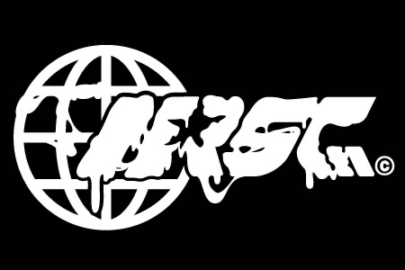
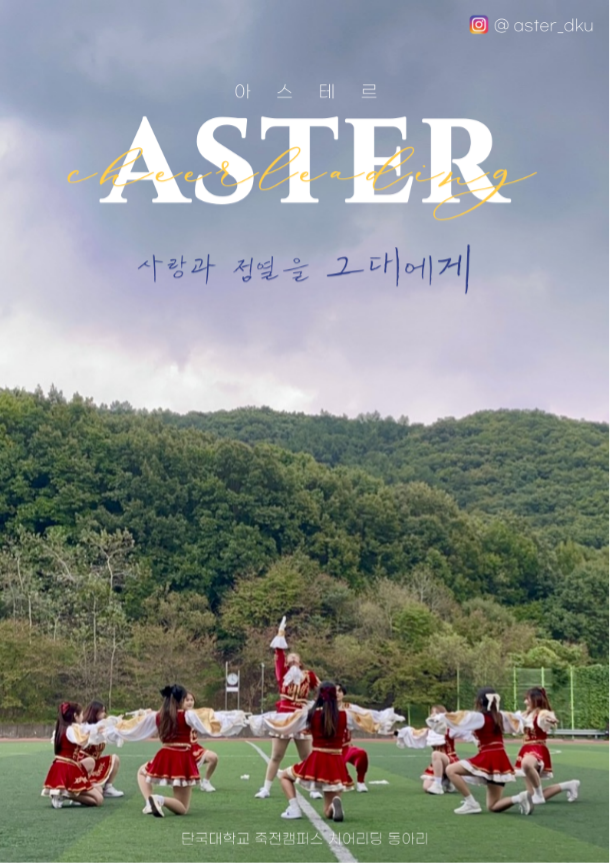
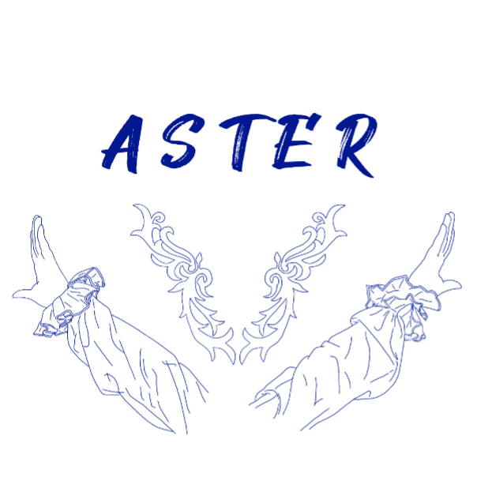

춤을 좋아하는 어스인
▶ NRSC ◀

안녕하세요, 단국대학교 유일무이 힙합동아리 💫NRSC💫에서 28기 신입부원을 모집합니다!
🔥 댄스 또는 랩에 평소 관심이 있어서 이번 기회에 같이 함께 하고 싶다!
🔥 무대에서 공연을 할 수 있는 흔치 않은 추억을 간직하고 싶다!
🔥 랩 뿐만 아니라 작곡,믹싱 등에도 도전해보고 싶다!
🔥 스우파, 스맨파를 보고 스트릿 댄스를 알고 싶어졌다!
🔥 몸치,박치,음치지만 춤이나 랩을 배우고 싶다!
♬♬ 하시는분들 편하게 지원하시면 됩니다~
신입생,휴학생,유학생 상관없이 모두 환영합니다
📌 NRSC는 어떤 동아리인가요??
저희는 랩팀과 댄스팀으로 구성된 단국대 유일무이 힙합동아리입니다!
우선 각자 팀에 대해 어떤 활동들을 하는지 아래 구체적으로 소개해보도록 하겠습니다!
💃 댄스팀 🕺
[소개]
춤을 통해 다양한 사람들과 교류할 수 있을 뿐더러 여러 무대 경험을 통해 잊지 못할 대학교 시절 추억을 쌓을 수 있습니다! 이외에도 힙합/락킹/왁킹/브레이킹/하우스 등과 같은 스트릿 댄스 장르를 배워볼 수 있는 기회를 제공합니다!
[정기연습]
•매주 수요일
축제/학과 행사 찬조/더 유니온(수도권 대학 댄스 동아리 페스티벌)/정기공연 등과 같은 무대 및 공연 준비를 위한 정기연습
•장르 연습(요일 미정)
힙합/락킹/왁킹/브레이킹/하우스 총 5개의 장르 중 한 가지를 선택해, 수요일을 제외한 요일에 한 주에 한 번씩 연습이 진행될 예정
(차후에 정확한 요일 공지 예정)
장르 연습을 통해 각 장르의 기본기를 쌓아 루틴을 만들어 보고, 프리스타일 혹은 배틀도 경험해 볼 수 있음
🎧 랩팀 🎤
[소개]
보컬 레코딩, 비트 메이킹 등 일련의 과정을 통해 힙합 음악을 직접 제작하고 공연하는 팀
[장르 소개]
붐뱁: 빠른 속도의 투포리듬이 특징. 주로 라임 운용이 중요시되는 장르.
트랩: 느린 속도의 드럼에 하이햇이 중심이 되어 전개되는 장르. 음절이 비교적 적어 위트나 무드가 부각됨.
드릴: 변칙적인 스네어의 리듬을 중심으로 타격감 있는 랩을 활용하는 장르.
현대 대중음악 특성상 장르의 경계가 희미해지고 있음을 감안하여 얼터너티브 장르까지 다루고 있음
[정기연습]
주 1회, 정확한 일정은 투표를 통해 의견을 반영해 운영 예정
작사, 톤/플로우, 장르 탐구, 기본 믹싱을 주로 다룸
기본기 향상의 의의를 가지지만 팀워크를 다지고 음원을 비축함으로써 공연의 질을 높이기 위함
📌 주요활동
• 단국대학교 축제
: 단국대학교에서 치뤄지는 축제에서 공연
• 단과대/학과 행사 찬조공연
: 공학인의 밤/ 인문인의 밤 등과 같이 단과대 또는 학과에서 주최하는 행사에서 무대를 서기도 합니다!
• ROY; Rookies of the year
: 각 해의 신입기수 중 가장 빛나는 신입부원을 가리는 경연 행사입니다!
• 정기공연
: 한 해를 마무리 하는 활동 중 하나로, 원하는 대로 팀을 꾸려 공연
이외에도 다양한 활동을 경험해보실 수 있습니다!
📌 활동 모습이 궁금해요!
[NRSC 인스타]
https://instagram.com/dku_nrsc?igshid=YmMyMTA2M2Y=
[NRSC 유튜브]
https://youtube.com/@nrsc2829
[NRSC 사운드클라우드]
http://m.soundcloud.com/dku_nrsc
📌 가입하고 싶어요!
NRSC 인스타 dku_nrsc 프로필 링크에 있는 구글폼 작성 해주시면 됩니다~
작사, 톤/플로우, 장르 탐구, 기본 믹싱을 주로 다룸
기본기 향상의 의의를 가지지만 팀워크를 다지고 음원을 비축함으로써 공연의 질을 높이기 위함
: 단국대학교에서 치뤄지는 축제에서 공연
• 단과대/학과 행사 찬조공연
: 공학인의 밤/ 인문인의 밤 등과 같이 단과대 또는 학과에서 주최하는 행사에서 무대를 서기도 합니다!
• ROY; Rookies of the year
: 각 해의 신입기수 중 가장 빛나는 신입부원을 가리는 경연 행사입니다!
• 정기공연
: 한 해를 마무리 하는 활동 중 하나로, 원하는 대로 팀을 꾸려 공연
▶ 일레케브라 ◀
여성 댄스 동아리, 댄스동아리 활동을 통한 친목도모
▶ 아스테르 ◀
 